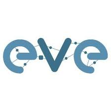
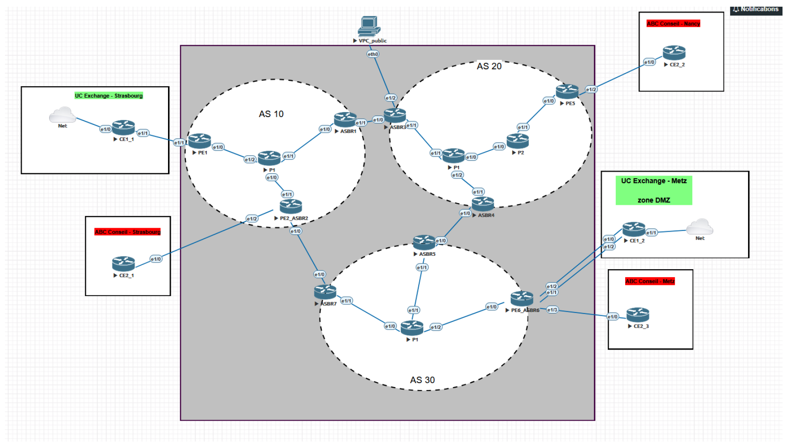

SAE Summary
During this SAE, we had to create a complex multi-site network infrastructure using the EVE-NG emulator. The goal was to respond to a call for tenders for two client companies (UC Exchange and ABC Conseil). The overall infrastructure integrates 3 major parts:
- A central "Internet Service Provider" (ISP) part comprising 3 Autonomous Systems (AS) and ensuring advanced routing via BGP, OSPF, RIP, and MPLS protocols.
- A LAN part simulating the hierarchical local networks of the companies' different geographic sites.
- A Services part integrating the secure deployment of enterprise servers (DNS, DHCP, Web, Mail, Active Directory).
Environment and Tools

EVE-NG
Professional virtual network emulator used to simulate the entire multi-site topology, including routers and virtual machines.
Cisco Equipment
Advanced command-line configuration of Cisco IOS on routers (CE, PE, P, ASBR) for BGP/OSPF/RIP and MPLS routing.
Debian Linux
Creation and administration of VMs for the DMZ zone hosting enterprise services (Apache, Bind9, Postfix/Dovecot).
Windows Server
Deployment of the primary DNS server and implementation of the Active Directory directory service for domain management.
Deliverables and Documentation
The work was documented in 3 distinct parts corresponding to the technical division of the project:
My main role in this project focused on the design and configuration of the Internet Service Provider (ISP) part. I was tasked with creating the core network to securely and isolatedly interconnect our clients' various geographic sites.

Technical missions carried out on the ISP part:
- Deployment of IGP routing (RIP and OSPF) within the 3 Autonomous Systems.
- Configuration of MPLS label switching at the core of the AS to optimize transit.
- Implementation of Route Reflectors (RR) to optimize the intra-AS BGP mesh.
- Strict isolation of clients using Virtual Routing and Forwarding (VRF) tables on Provider Edge (PE) routers.
- Management of redundancy and failover between AS in case of hardware failure (BGP Additional-paths).
- Setup of a static NAT on an ASBR to expose a private web server to the public internet.
Main project steps
1. Design and Addressing
Analysis of specifications, task distribution, creation of IP addressing plans (VLSM) for LANs and the ISP, and deployment of the topology in EVE-NG.
2. LAN Administration
Configuration of switches for each site: creation of hierarchical VLANs, securing with MST (Multi Spanning Tree), and implementing high availability via VRRP.
3. Interconnection (ISP)
Opening BGP (iBGP and eBGP) and MP-BGP sessions for transporting VPNv4 prefixes. Definition of Route-Targets (RD/RT) to secure the exchange of client routes.
4. Service Deployment
Installation and securing of virtual machines (Debian/Windows) in the DMZ zone. Configuration of DNS (with zone transfer), Web (Apache), Mail, and Active Directory servers.
Validated Skills
This project is at the heart of the Cybersecurity track and validates the following learnings:
- AC21.01 Configure and troubleshoot dynamic routing in a network (OSPF, RIP, BGP).
- AC22.03 Set up a multi-site connection via a carrier network (MPLS-VPN).
- AC24.02Cyber Implement fundamental tools for securing an infrastructure (VRF, prefix lists, NAT).
- CE4.04 Work in a team to create a complex interconnected architecture.
Reflective Analysis
During this project, I was able to integrate into the center of a collaborative effort simulating a large-scale network infrastructure. This involves significant security issues because several clients are communicating over the same core network (which requires strict isolation via VRFs and route filtering). The use of the EVE-NG emulator was sometimes more complex than expected in terms of hardware resources, but we managed to overcome the technical challenges and successfully complete all the specifications.